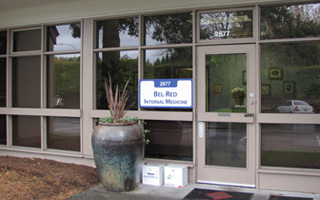

Professional & Experienced Bellevue & Redmond Primary Care & Aesthetic Services
BelRed Internal Medicine, PLLC is a local leader in Bellevue & Redmond primary care services, aesthetic services and weight management. Lead physician, Dr. Teresa Girolami has won America's Top Physician Award four years in a row and is a recipient of the esteemed Patient's Choice Award.
It is the goal of Dr. Girolami and every one of our physicians, nurses and staff members to provide you with quality medical care, with minimal waiting time. Wherever you live in the Seattle area, we're just moments away. When you visit us, you will see a qualified provider who will sit down with you individually and assess your medical needs. From adult and family medicine to preventative care to health maintenance to aesthetic services, we are committed to providing our patients with the finest quality medical care.
When you are a patient at BelRed Internal Medicine, we actually answer the phone when you call and know you by name. That is the level of care and attention you can expect....
BelRed Internal Medicine also offers weight management. We provide a medical evaluation, exercise prescription, diet programs and behavioral techniques.
For a complete list of what we offer, please view our pages for Primary Services and Aesthetic Services and Weight Management.

We Value Our Patients
to the opportunity to serve you.


 (
(